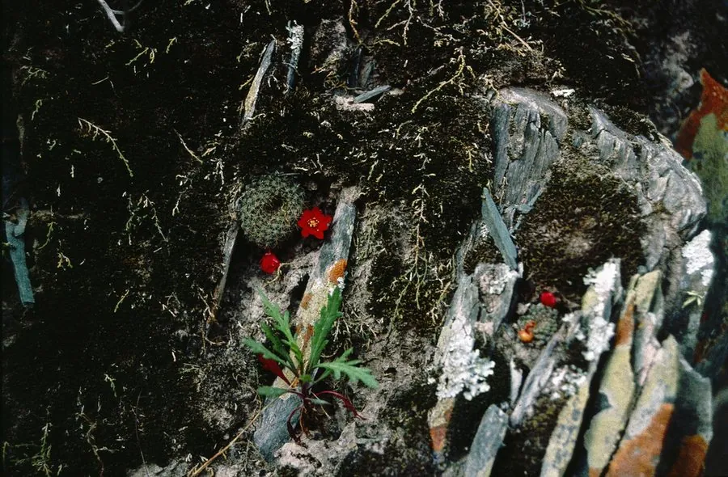

多肉植物 · 植物界
子孙球 Rebutia minuscula

仙人掌科子孙球属小型球状多肉，易群生，春季开出大量橙红色小花，环绕球体，原产南美，是开花性好的入门仙人球。
- 分类
- 门被子植物门纲木兰纲目石竹目科仙人掌科属子孙球属
- 栖息环境
- 阿根廷北部干旱山地的石缝与草坡，喜光、耐旱
- 地理分布
- 原产南美洲阿根廷北部，世界各地盆栽观赏
- 保护级别
- 暂无评估；CITES 附录Ⅱ（仙人掌科）
物种志
子孙球为仙人掌科子孙球属的小型球状多肉，球体直径 3–5 厘米，初单生，后不断从基部产生小球，形成密集的群生株。球体绿色，具 10 余条螺旋状排列的棱，棱上刺座密生白色短刺。花侧生于球体下部，漏斗形，橙红色或红色，直径 3–4 厘米，花期春季，单株可同时开出十余朵；果实为小型浆果。
子孙球原产南美洲阿根廷北部的干旱山地，喜阳光充足、温暖干燥和通风良好的环境，耐旱、怕积水，冬季需保持 5℃ 以上。它球体小巧、容易群生，花期花朵围绕球体开放，十分热闹，适合小盆栽种。栽培用颗粒土，生长期干透浇透，花前适当增加光照；繁殖以分株为主，将母株周围的小球掰下另栽即可，也可播种。
形态与习性
- 球径单球直径 3–5 厘米，群生株幅可达 15 厘米
- 群生基部不断产生小球，形成密集株丛
- 花期春季，花橙红色，直径 3–4 厘米
- 光照喜充足阳光，花前增加日照
- 水分耐旱，干透浇透，忌积水
- 土壤疏松透气的颗粒土
- 繁殖分株为主，也可播种
- 主要用途小盆群栽、窗台观赏
趣味知识
- 子孙球基部会不断长出小球，密密麻麻挤成一盆，因此得名。
- 它春季开花时，橙红色小花围绕球体排成一圈，十分醒目。
- 小球掰下晾干伤口后另栽，很容易长成新株。